Закон розподілу Пуассона
Дискретна випадкова
величина, яка характеризує відносну частоту появи
подій в деякі моменти часу, підкоряється закону розподілу
Пуассона. Цей розподіл використовують для знаходження,
наприклад, очікуваної кількості покупців за годину, або кількості механізмів, що вийшли з ладу за
певний проміжок часу і очікують ремонту тощо. В кожному з цих випадків
випадкова змінна (кількість покупців,
кількість механізмів тощо) обчислюється відносно певного проміжку часу.
Розроблений французьким математиком Сімеоном Пуассоном (1781-1840)
закон розподілу характеризує ймовірність появи випадкових подій за деякий
інтервал часу.
Для застосування пуассонівського розподілу необхідні два важливих припущення, а саме:
1)
Ймовірність появи
деякої події постійна для будь-якого інтервапучасу;
2)
Поява деякої події
в будь-якому проміжку часу не залежить від її появи в інших
інтервалах часу.
Дані припущення дозволяють визначити закон розподілу Пуассона
у вигляді
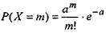
(22)
де
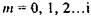
визначає кількість моментів часу, у які з'явиться
деяка подія;
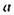
- середня кількість подій в одиницю часу;
 - основи натурального логарифму.
Якщо у схемі незалежних повторних випробувань п досить велике
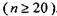
,
а
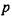
прямує до нуля, то біноміальний розподіл
- основи натурального логарифму.
Якщо у схемі незалежних повторних випробувань п досить велике
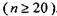
,
а
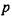
прямує до нуля, то біноміальний розподіл
апроксимує розподіл Пуассона, параметр якого
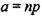
(23), причому при
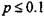
ця апроксимація дає добрі результати
незалежно від величини п.
Приклад 5. Відомо, що в деяких галузях промисловості в середньому
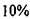
працівників звільняються з роботи за
власним бажанням. Менеджер фірми
деякої галузі промисловості зробив вибірку із 100 працівників. Визначити ймовірність, що із вибіркової сукупності працівників три залишать компанію.
Розв'язання.
Маємо
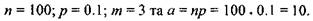
Використовуємо розподіл Пуассона і одержуємо

тобто шанс, що точно три працівники залишать компанію менше 1%.